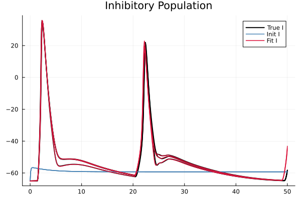
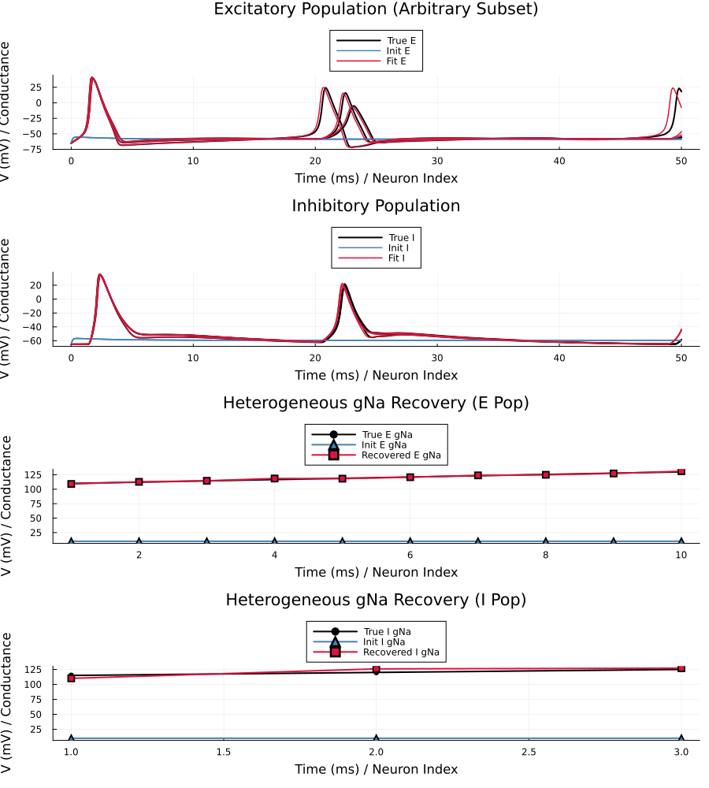

14. Parameter Estimation: Heterogeneous Vectorized Population
Introduction
Here we fit the conductances of a larger, heterogeneous E/I microcircuit. We have 10 Excitatory and 3 Inhibitory neurons. To make the dynamics asynchronous, we use random synaptic weight matrices. We attempt a large-scale optimization: fitting the heterogeneous gNa arrays (13 parameters) alongside the shared gK and gleak scalars (4 parameters) for a total of 17 parameters.
using MTKNeuralToolkit
using ModelingToolkit: t_nounits as t, D_nounits as D, connect, Pre
using SymbolicIndexingInterface: getu
using MTKNeuralToolkit.HodgkinHuxley: SodiumChannel, PotassiumChannel, LeakChannel
using MTKNeuralToolkit: PEMObservationChannel
using ModelingToolkit: mtkcompile, @named, @component
using OrdinaryDiffEq
using Optimization
using OptimizationOptimJL
using SciMLStructures: Tunable, canonicalize, replace
using SymbolicIndexingInterface: parameter_values, setp
using PreallocationTools
using DataInterpolations
using SciMLBase
using Plots
using Markdown
using Random1. Build the True System & Generate Data
N_E = 10
N_I = 3
top_E = Vectorized(N_E)
top_I = Vectorized(N_I);Heterogeneous true sodium conductances
gNa_E_true = collect(range(110.0, 130.0, length=N_E))
gNa_I_true = collect(range(115.0, 125.0, length=N_I))
true_gK = 36.0
true_gleak = 0.3
function build_population(name::Symbol, top; gNa, gK, gleak, pem=false, itps=nothing, K=1.0)
@named cap = Capacitor(topology=top, C=1.0)
@named na = SodiumChannel(topology=top, g=gNa)
@named k = PotassiumChannel(topology=top, g=gK)
@named leak = LeakChannel(topology=top, g=gleak)
channels = [na, k, leak]
if pem
@named pem_ch = PEMObservationChannel(itps=itps, K_init=K, topology=top)
push!(channels, pem_ch)
end
return build_compartment(cap, channels; name=name, V_init=-65.0, topology=top)
end
pop_E_true = build_population(:pop_E_true, top_E; gNa=gNa_E_true, gK=true_gK, gleak=true_gleak)
pop_I_true = build_population(:pop_I_true, top_I; gNa=gNa_I_true, gK=true_gK, gleak=true_gleak)
Random.seed!(42)
W_EE = 0.5 .* rand(N_E, N_E)
W_EI = 1.0 .* rand(N_I, N_E)
W_IE = 2.0 .* rand(N_E, N_I)
W_II = 1.0 .* rand(N_I, N_I)
syn_EE = build_synapse_block(pop_E_true, pop_E_true, W_EE; name=:syn_EE, E_rev=0.0)
syn_EI = build_synapse_block(pop_E_true, pop_I_true, W_EI; name=:syn_EI, E_rev=0.0)
syn_IE = build_synapse_block(pop_I_true, pop_E_true, W_IE; name=:syn_IE, E_rev=-80.0)
syn_II = build_synapse_block(pop_I_true, pop_I_true, W_II; name=:syn_II, E_rev=-80.0)
synapse_specs = [syn_EE, syn_EI, syn_IE, syn_II]
drivers = [(1, 15.0)] # Strong kick to E population
true_net = build_acausal_network([pop_E_true, pop_I_true]; synapse_specs=synapse_specs, drivers=drivers, name=:true_net)
true_sys = mtkcompile(true_net.sys)
true_prob = ODEProblem(true_sys, [], (0.0, 50.0), jac=true, sparse=true)
timesteps = 0.0:0.1:50.0
true_sol = solve(true_prob, Rosenbrock23(); saveat=timesteps)
V_data_E_mat = reduce(hcat, true_sol[true_sys.pop_E_true.cap.v])
V_data_I_mat = reduce(hcat, true_sol[true_sys.pop_I_true.cap.v])
itps_E = [LinearInterpolation(V_data_E_mat[i, :], timesteps) for i in 1:N_E]
itps_I = [LinearInterpolation(V_data_I_mat[i, :], timesteps) for i in 1:N_I];2. Setup the PEM Optimization Problem
We fit 17 parameters total: heterogeneous gNa arrays (length 10 and 3) and shared gK/gleak scalars. We intentionally guess terrible values (gNa=10.0, gK=100.0, gleak=10.0) that abolish spiking entirely.
guess_gNa_E = fill(10.0, N_E)
guess_gNa_I = fill(10.0, N_I)
guess_gK = 100.0
guess_gleak = 10.0
pop_E_fit = build_population(:pop_E_fit, top_E; gNa=guess_gNa_E, gK=guess_gK, gleak=guess_gleak, pem=true, itps=itps_E, K=2.0)
pop_I_fit = build_population(:pop_I_fit, top_I; gNa=guess_gNa_I, gK=guess_gK, gleak=guess_gleak, pem=true, itps=itps_I, K=2.0)
syn_EE_fit = build_synapse_block(pop_E_fit, pop_E_fit, W_EE; name=:syn_EE_fit, E_rev=0.0)
syn_EI_fit = build_synapse_block(pop_E_fit, pop_I_fit, W_EI; name=:syn_EI_fit, E_rev=0.0)
syn_IE_fit = build_synapse_block(pop_I_fit, pop_E_fit, W_IE; name=:syn_IE_fit, E_rev=-80.0)
syn_II_fit = build_synapse_block(pop_I_fit, pop_I_fit, W_II; name=:syn_II_fit, E_rev=-80.0)
synapse_specs_fit = [syn_EE_fit, syn_EI_fit, syn_IE_fit, syn_II_fit]
fit_net = build_acausal_network([pop_E_fit, pop_I_fit]; synapse_specs=synapse_specs_fit, drivers=drivers, name=:fit_net)
fit_sys = mtkcompile(fit_net.sys)
fit_prob = ODEProblem(fit_sys, [], (0.0, 50.0), jac=true, sparse=true);Extract symbols for the 17 parameters
gNa_E_sym = fit_sys.pop_E_fit.na.g
gK_E_sym = fit_sys.pop_E_fit.k.g
gleak_E_sym = fit_sys.pop_E_fit.leak.g
gNa_I_sym = fit_sys.pop_I_fit.na.g
gK_I_sym = fit_sys.pop_I_fit.k.g
gleak_I_sym = fit_sys.pop_I_fit.leak.g
setter = setp(fit_prob, [gNa_E_sym, gK_E_sym, gleak_E_sym, gNa_I_sym, gK_I_sym, gleak_I_sym])
diffcache = DiffCache(copy(canonicalize(Tunable(), parameter_values(fit_prob))[1]))
v_getter_E = getu(fit_prob, fit_sys.pop_E_fit.cap.v)
v_getter_I = getu(fit_prob, fit_sys.pop_I_fit.cap.v)SymbolicIndexingInterface.GetStateIndex{Vector{Int64}}([38, 37, 36])3. Define Loss Function & Optimize
function loss(x, p)
prob, timesteps, V_data_E, V_data_I, setter, diffcache, v_getter_E, v_getter_I = p
ps = parameter_values(prob)
buffer = get_tmp(diffcache, x)
copyto!(buffer, canonicalize(Tunable(), ps)[1])
ps = replace(Tunable(), ps, buffer)
#Split the flat x vector into the 6 grouped chunks expected by the setter
vals = [
x[1:N_E], #gNa_E (array of 10)
x[N_E + 1], #gK_E (scalar)
x[N_E + 2], #gleak_E (scalar)
x[N_E + 3 : N_E + N_I + 2], #gNa_I (array of 3)
x[N_E + N_I + 3], #gK_I (scalar)
x[N_E + N_I + 4] #gleak_I (scalar)
]
setter(ps, vals)
newprob = remake(prob; p=ps)
sol = solve(newprob, Rosenbrock23(); saveat=timesteps)
if !SciMLBase.successful_retcode(sol.retcode)
return Inf
end
V_fit_E = reduce(hcat, v_getter_E(sol))
V_fit_I = reduce(hcat, v_getter_I(sol))
return (sum(abs2, V_fit_E .- V_data_E) + sum(abs2, V_fit_I .- V_data_I)) / (size(V_data_E, 2) * (N_E + N_I))
endloss (generic function with 1 method)Flatten the 17 initial guesses into a single vector for the optimizer
x0 = vcat(guess_gNa_E, [guess_gK, guess_gleak], guess_gNa_I, [guess_gK, guess_gleak])
opt_params = (fit_prob, timesteps, V_data_E_mat, V_data_I_mat, setter, diffcache, v_getter_E, v_getter_I)
adtype = AutoForwardDiff()
optfn = OptimizationFunction(loss, adtype)
optprob = OptimizationProblem(optfn, x0, opt_params)OptimizationProblem. In-place: true
u0: 17-element Vector{Float64}:
10.0
10.0
10.0
10.0
10.0
10.0
10.0
10.0
10.0
10.0
100.0
10.0
10.0
10.0
10.0
100.0
10.04. Optimize and Plot
println("Starting optimization (17 parameters)...")
res = solve(optprob, BFGS(); maxiters=100)retcode: MaxIters
u: 17-element Vector{Float64}:
109.10295974350409
112.7796257416115
114.60077864303652
118.53791461820474
118.28711182553819
120.79268697504696
123.96850283877532
124.94968991597545
127.26041030779788
131.16531443298513
35.981256788113164
0.2974030763901839
110.09825270445567
125.9549220125756
127.0653367029241
36.04383897884366
0.311606289159817Extract recovered parameters
opt_gNa_E = res.u[1:N_E]
opt_gK_E = res.u[N_E + 1]
opt_gleak_E = res.u[N_E + 2]
opt_gNa_I = res.u[N_E + 3 : N_E + N_I + 2]
opt_gK_I = res.u[N_E + N_I + 3]
opt_gleak_I = res.u[N_E + N_I + 4]0.311606289159817–- Pure simulation for INITIAL GUESS (No PEM) –-
pop_E_init = build_population(:pop_E_init, top_E; gNa=guess_gNa_E, gK=guess_gK, gleak=guess_gleak)
pop_I_init = build_population(:pop_I_init, top_I; gNa=guess_gNa_I, gK=guess_gK, gleak=guess_gleak)
syn_EE_init = build_synapse_block(pop_E_init, pop_E_init, W_EE; name=:syn_EE_init, E_rev=0.0)
syn_EI_init = build_synapse_block(pop_E_init, pop_I_init, W_EI; name=:syn_EI_init, E_rev=0.0)
syn_IE_init = build_synapse_block(pop_I_init, pop_E_init, W_IE; name=:syn_IE_init, E_rev=-80.0)
syn_II_init = build_synapse_block(pop_I_init, pop_I_init, W_II; name=:syn_II_init, E_rev=-80.0)
synapse_specs_init = [syn_EE_init, syn_EI_init, syn_IE_init, syn_II_init]
init_net = build_acausal_network([pop_E_init, pop_I_init]; synapse_specs=synapse_specs_init, drivers=drivers, name=:init_net)
init_sys = mtkcompile(init_net.sys)
init_prob = ODEProblem(init_sys, [], (0.0, 50.0), jac=true, sparse=true)
init_sol = solve(init_prob, Rosenbrock23(); saveat=timesteps)retcode: Success
Interpolation: 1st order linear
t: 501-element Vector{Float64}:
0.0
0.1
0.2
0.3
0.4
0.5
0.6
0.7
0.8
0.9
⋮
49.2
49.3
49.4
49.5
49.6
49.7
49.8
49.9
50.0
u: 501-element Vector{Vector{Float64}}:
[0.0, 0.0, 0.0, 0.0, 0.0, 0.0, 0.0, 0.0, 0.0, 0.0 … -65.0, -65.0, -65.0, -65.0, -65.0, -65.0, -65.0, -65.0, -65.0, -65.0]
[1.182086148964899e-10, 1.182086148867247e-10, 1.18208614894916e-10, 1.182086148964899e-10, 1.182086148867247e-10, 1.18208614894916e-10, 1.678156555426088e-10, 1.6781565555797716e-10, 1.67815655554207e-10, 1.678156555553563e-10 … -58.39385188571329, -58.39385188526444, -58.393851885374715, -58.39385188534104, -58.393851885388365, -58.393851885408985, -58.39385188553623, -58.39385188535865, -58.39385188533595, -58.39385188550162]
[6.331024718446674e-10, 6.331024712968748e-10, 6.331024717549017e-10, 6.331024718446674e-10, 6.331024712968748e-10, 6.331024717549017e-10, 1.0628960547347875e-9, 1.062896055757917e-9, 1.0628960555081834e-9, 1.0628960555840179e-9 … -56.217934152518936, -56.2179341481892, -56.217934149242275, -56.21793414892346, -56.217934149378635, -56.21793414958746, -56.21793415083377, -56.21793414909464, -56.217934148864245, -56.21793415046934]
[1.5026414355365273e-9, 1.5026414312381523e-9, 1.5026414348222726e-9, 1.5026414355365273e-9, 1.5026414312381523e-9, 1.5026414348222726e-9, 2.699722289633208e-9, 2.6997222980889603e-9, 2.6997222960457844e-9, 2.699722296660868e-9 … -55.53820585803547, -55.53820584372648, -55.53820584716222, -55.53820584613358, -55.538205847632454, -55.53820584836373, -55.5382058525614, -55.538205846705274, -55.53820584589607, -55.538205851229705]
[2.515015487696336e-9, 2.5150154727200177e-9, 2.515015485182259e-9, 2.515015487696336e-9, 2.5150154727200177e-9, 2.515015485182259e-9, 4.6534551160637076e-9, 4.653455146014746e-9, 4.653455138842412e-9, 4.653455140984729e-9 … -55.35210844604699, -55.3521084168846, -55.35210842381481, -55.352108421758814, -55.35210842480489, -55.35210842636189, -55.35210843504444, -55.352108422933654, -55.35210842120713, -55.35210843212438]
[3.5491151395629055e-9, 3.5491151051270345e-9, 3.5491151337403406e-9, 3.5491151395629055e-9, 3.5491151051270345e-9, 3.5491151337403406e-9, 6.658362317190927e-9, 6.658362386279157e-9, 6.658362369851038e-9, 6.658362374727411e-9 … -55.329936459044305, -55.32993641271497, -55.32993642364058, -55.329936420421554, -55.32993642525059, -55.329936427802046, -55.3299364417449, -55.32993642229935, -55.32993641946598, -55.32993643686494]
[4.560318202584058e-9, 4.560318139976551e-9, 4.560318191943409e-9, 4.560318202584058e-9, 4.560318139976551e-9, 4.560318191943409e-9, 8.614764074835507e-9, 8.614764200212629e-9, 8.614764170560222e-9, 8.614764179319539e-9 … -55.36693973943396, -55.36693967534103, -55.36693969036595, -55.36693968596309, -55.36693969263281, -55.36693969624565, -55.366939715693555, -55.36693968857297, -55.36693968455676, -55.36693970868556]
[5.531546964583259e-9, 5.531546865722721e-9, 5.531546947715493e-9, 5.531546964583259e-9, 5.531546865722721e-9, 5.531546947715493e-9, 1.048446080649377e-8, 1.048446100375954e-8, 1.0484460957304622e-8, 1.0484460970974306e-8 … -55.42363455661078, -55.42363447513457, -55.42363449414726, -55.423634488599255, -55.4236344970674, -55.423634501740906, -55.42363452661812, -55.423634491928766, -55.42363448672947, -55.42363451745958]
[6.457775054667686e-9, 6.45777491254639e-9, 6.4577750303448255e-9, 6.457775054667686e-9, 6.45777491254639e-9, 6.4577750303448255e-9, 1.2256119281582219e-8, 1.2256119563917502e-8, 1.2256119497660658e-8, 1.2256119517095357e-8 … -55.487638558227225, -55.487638460247275, -55.48763848303054, -55.48763847640401, -55.4876384865777, -55.487638492272474, -55.48763852233163, -55.4876384804188, -55.48763847407971, -55.48763851108722]
[7.338598147451534e-9, 7.338597956341496e-9, 7.338598114666226e-9, 7.338598147451534e-9, 7.338597956341496e-9, 7.338598114666226e-9, 1.392862714624242e-8, 1.3928627524048072e-8, 1.3928627435639253e-8, 1.392862746150396e-8 … -55.555719053241944, -55.55571893980749, -55.555718966110774, -55.555718958480355, -55.55571897024987, -55.55571897691101, -55.555719011841845, -55.55571896313834, -55.55571895572027, -55.55571899861318]
⋮
[1.4867945990244532e-8, 1.486794515672225e-8, 1.486794585550974e-8, 1.4867945990244532e-8, 1.486794515672225e-8, 1.486794585550974e-8, 2.1253533056873352e-8, 2.12535342533293e-8, 2.1253533960386036e-8, 2.125353404957497e-8 … -58.552421507049786, -58.55242139446928, -58.552421422033966, -58.55242141364161, -58.55242142549891, -58.55242143075925, -58.55242146284148, -58.552421418067716, -58.552421412273844, -58.55242145388916]
[1.4867938520056359e-8, 1.4867937686535645e-8, 1.4867938385321835e-8, 1.4867938520056359e-8, 1.4867937686535645e-8, 1.4867938385321835e-8, 2.125351996018595e-8, 2.1253521156639334e-8, 2.1253520863696655e-8, 2.1253520952885423e-8 … -58.55242156322945, -58.55242145064894, -58.55242147821363, -58.552421469821276, -58.55242148167857, -58.55242148693891, -58.55242151902114, -58.55242147424738, -58.55242146845351, -58.55242151006882]
[1.4867931210227834e-8, 1.4867930376708654e-8, 1.4867931075493574e-8, 1.4867931210227834e-8, 1.4867930376708654e-8, 1.4867931075493574e-8, 2.125350714724569e-8, 2.125350834369657e-8, 2.1253508050754464e-8, 2.1253508139943066e-8 … -58.55242161828916, -58.55242150570865, -58.55242153327334, -58.552421524880984, -58.55242153673829, -58.552421541998626, -58.55242157408085, -58.55242152930709, -58.55242152351322, -58.552421565128526]
[1.486792406075896e-8, 1.4867923227241276e-8, 1.4867923926024955e-8, 1.486792406075896e-8, 1.4867923227241276e-8, 1.4867923926024955e-8, 2.125349461805258e-8, 2.125349581450101e-8, 2.1253495521559463e-8, 2.1253495610747906e-8 … -58.55242167222892, -58.552421559648415, -58.552421587213104, -58.55242157882075, -58.552421590678044, -58.552421595938384, -58.55242162802061, -58.552421583246854, -58.55242157745298, -58.55242161906829]
[1.4867917071649736e-8, 1.4867916238133512e-8, 1.4867916936915982e-8, 1.4867917071649736e-8, 1.4867916238133512e-8, 1.4867916936915982e-8, 2.1253482372606614e-8, 2.1253483569052656e-8, 2.125348327611165e-8, 2.125348336529994e-8 … -58.552421725048724, -58.55242161246822, -58.55242164003291, -58.552421631640556, -58.55242164349785, -58.55242164875819, -58.55242168084042, -58.55242163606666, -58.55242163027279, -58.55242167188809]
[1.4867910242900161e-8, 1.486790940938536e-8, 1.4867910108166649e-8, 1.4867910242900161e-8, 1.486790940938536e-8, 1.4867910108166649e-8, 2.1253470410907792e-8, 2.12534716073515e-8, 2.125347131441103e-8, 2.125347140359917e-8 … -58.55242177674858, -58.55242166416808, -58.55242169173277, -58.55242168334041, -58.5524216951977, -58.55242170045805, -58.552421732540274, -58.55242168776652, -58.552421681972646, -58.55242172358795]
[1.4867903574510236e-8, 1.4867902740996825e-8, 1.4867903439776962e-8, 1.4867903574510236e-8, 1.4867902740996825e-8, 1.4867903439776962e-8, 2.1253458732956117e-8, 2.125345992939755e-8, 2.1253459636457598e-8, 2.1253459725645588e-8 … -58.55242182732848, -58.552421714747986, -58.552421742312674, -58.55242173392032, -58.55242174577761, -58.552421751037954, -58.55242178312018, -58.552421738346425, -58.55242173255255, -58.552421774167854]
[1.486789706647996e-8, 1.48678962329679e-8, 1.4867896931746917e-8, 1.486789706647996e-8, 1.48678962329679e-8, 1.4867896931746917e-8, 2.125344733875159e-8, 2.1253448535190802e-8, 2.1253448242251356e-8, 2.1253448331439204e-8 … -58.552421876788436, -58.55242176420794, -58.55242179177262, -58.552421783380275, -58.55242179523756, -58.55242180049791, -58.55242183258014, -58.552421787806374, -58.55242178201251, -58.5524218236278]
[1.4867890718809334e-8, 1.4867889885298591e-8, 1.4867890584076516e-8, 1.4867890718809334e-8, 1.4867889885298591e-8, 1.4867890584076516e-8, 2.1253436228294204e-8, 2.125343742473126e-8, 2.1253437131792304e-8, 2.1253437220980012e-8 … -58.552421925128435, -58.55242181254794, -58.55242184011263, -58.552421831720274, -58.552421843577555, -58.55242184883791, -58.552421880920136, -58.55242183614638, -58.55242183035251, -58.5524218719678]–- Pure simulation for RECOVERED PARAMETERS (No PEM) –-
pop_E_eval = build_population(:pop_E_eval, top_E; gNa=opt_gNa_E, gK=opt_gK_E, gleak=opt_gleak_E)
pop_I_eval = build_population(:pop_I_eval, top_I; gNa=opt_gNa_I, gK=opt_gK_I, gleak=opt_gleak_I)
syn_EE_eval = build_synapse_block(pop_E_eval, pop_E_eval, W_EE; name=:syn_EE_eval, E_rev=0.0)
syn_EI_eval = build_synapse_block(pop_E_eval, pop_I_eval, W_EI; name=:syn_EI_eval, E_rev=0.0)
syn_IE_eval = build_synapse_block(pop_I_eval, pop_E_eval, W_IE; name=:syn_IE_eval, E_rev=-80.0)
syn_II_eval = build_synapse_block(pop_I_eval, pop_I_eval, W_II; name=:syn_II_eval, E_rev=-80.0)
synapse_specs_eval = [syn_EE_eval, syn_EI_eval, syn_IE_eval, syn_II_eval]
eval_net = build_acausal_network([pop_E_eval, pop_I_eval]; synapse_specs=synapse_specs_eval, drivers=drivers, name=:eval_net)
eval_sys = mtkcompile(eval_net.sys)
eval_prob = ODEProblem(eval_sys, [], (0.0, 50.0), jac=true, sparse=true)
eval_sol = solve(eval_prob, Rosenbrock23(); saveat=timesteps);–- Extract the free-running matrices for plotting –-
V_init_E_mat = reduce(hcat, init_sol[init_sys.pop_E_init.cap.v])
V_init_I_mat = reduce(hcat, init_sol[init_sys.pop_I_init.cap.v])
V_eval_E_mat = reduce(hcat, eval_sol[eval_sys.pop_E_eval.cap.v])
V_eval_I_mat = reduce(hcat, eval_sol[eval_sys.pop_I_eval.cap.v])3×501 Matrix{Float64}:
-65.0 -64.9994 -64.9972 -64.9943 … -51.0163 -47.9887 -44.2755
-65.0 -64.9844 -64.9679 -64.951 -51.8837 -48.9696 -45.3612
-65.0 -64.9833 -64.9658 -64.948 -50.5443 -47.2943 -43.1527–- Plotting the Free-Running Dynamics –-
subset_E = [1, 5, 10]
labels_E_true = ["True E" "" ""]
labels_E_init = ["Init E" "" ""]
labels_E_fit = ["Fit E" "" ""]
p1 = plot(timesteps, V_data_E_mat[subset_E,:]', color=:black, lw=2, label=labels_E_true)
plot!(p1, timesteps, V_init_E_mat[subset_E,:]', color=:steelblue, lw=1.5, label=labels_E_init)
plot!(p1, timesteps, V_eval_E_mat[subset_E,:]', color=:crimson, lw=1.5, label=labels_E_fit)
title!("Excitatory Population (Arbitrary Subset)")
labels_I_true = ["True I" "" ""]
labels_I_init = ["Init I" "" ""]
labels_I_fit = ["Fit I" "" ""]
p2 = plot(timesteps, V_data_I_mat', color=:black, lw=2, label=labels_I_true)
plot!(p2, timesteps, V_init_I_mat', color=:steelblue, lw=1.5, label=labels_I_init)
plot!(p2, timesteps, V_eval_I_mat', color=:crimson, lw=1.5, label=labels_I_fit)
title!("Inhibitory Population")
Add initial guesses to these two plots
p3 = plot(1:N_E, gNa_E_true, label="True E gNa", lw=2, color=:black, shape=:circle)
plot!(p3, 1:N_E, guess_gNa_E, label="Init E gNa", lw=2, color=:steelblue, shape=:utriangle)
plot!(p3, 1:N_E, opt_gNa_E, label="Recovered E gNa", lw=2, color=:crimson, shape=:square)
title!("Heterogeneous gNa Recovery (E Pop)")
p4 = plot(1:N_I, gNa_I_true, label="True I gNa", lw=2, color=:black, shape=:circle)
plot!(p4, 1:N_I, guess_gNa_I, label="Init I gNa", lw=2, color=:steelblue, shape=:utriangle)
plot!(p4, 1:N_I, opt_gNa_I, label="Recovered I gNa", lw=2, color=:crimson, shape=:square)
title!("Heterogeneous gNa Recovery (I Pop)")
p = plot(p1, p2, p3, p4, layout=(4,1), size=(900, 1000), legend=:outertop)
xlabel!(p, "Time (ms) / Neuron Index")
ylabel!(p, "V (mV) / Conductance")
p
5. Comparison of scalar parameters
Markdown.parse("""
| Parameter | True Value | Initial Guess | Recovered Value |
|-----------|------------|---------------|-----------------|
| E: gK | $true_gK | $guess_gK | $(round(opt_gK_E, digits=3)) |
| E: gleak | $true_gleak| $guess_gleak | $(round(opt_gleak_E, digits=3)) |
| I: gK | $true_gK | $guess_gK | $(round(opt_gK_I, digits=3)) |
| I: gleak | $true_gleak| $guess_gleak | $(round(opt_gleak_I, digits=3)) |
""")| Parameter | True Value | Initial Guess | Recovered Value |
|---|---|---|---|
| E: gK | 36.0 | 100.0 | 35.981 |
| E: gleak | 0.3 | 10.0 | 0.297 |
| I: gK | 36.0 | 100.0 | 36.044 |
| I: gleak | 0.3 | 10.0 | 0.312 |
This page was generated using Literate.jl.